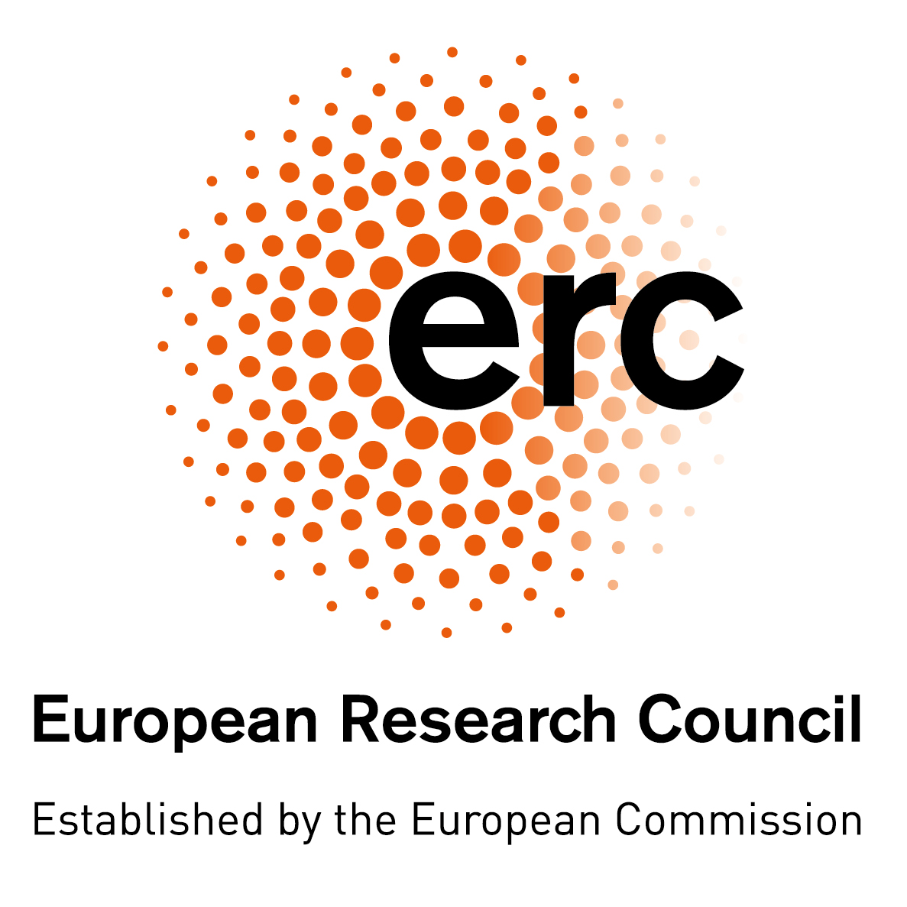

The CRETE Project* ( ERC Starting Grant )
|
Refinement types are a type-based, static verification technique designed to be practical. They enrich the types of an existing programming language with logical predicates to specify program properties and automatically validate these specifications using SMT solvers. Refinement types are a promising verification technology that in the last decade has spread to mainstream languages (e.g., Haskell, C, Ruby, Scala, and the ML-family) to verify sophisticated properties of real world applications, e.g., safety of cryptographic protocols, memory and resource usage, and web security. The weakness of refinement types is that they do not meet the soundness standards set by theorem provers. A sound verification system accepts as safe only those programs that never violate their specifications. Refinement type checkers (e.g., Liquid Haskell, F*, and Stainless) approximately report five unsoundness bugs per year, as opposed to only one reported by the Coq theorem prover. This rarity of unsoundness bugs in Coq is unsurprising since Coq is designed to soundly machine check mathematical proofs. Coq's soundness design recipe though cannot be directly applied to refinement type checkers that aim to practically verify real world programs. |

|

The goal of CRETE is to design a sound and practical refinement type system.
*Partially funded by the European Union (GA 101039196). Views and opinions expressed are however those of the author(s) only and do not necessarily reflect those of the European Union or the European Research Council. Neither the European Union nor the European Research Council can be held responsible for them.
People
- Niki Vazou, Research Associate Proffesor, PI.
- Aliaksandr Hryzlou, Research Programmer.
- Colin Rothgang, PhD Student.
- Antonio Zegarelli, PhD Student, co-supervised by Marco Guarnieri.
- Lisa Vasilenko, PhD Student, co-supervised by Gilles Barthe.
Alumni
- Afonso Rafael, Research Intern, 2022.
- Lykourgos Mastorou, Research Intern, 2022.
Publications
- Mechanizing Refinement Types by Michael Borokowski, Niki Vazou, and Ranjit Jhala. POPL 2024 [.pdf]
Flux: Liquid types for rust by Nico Lehmann, Adam T Geller, Niki Vazou, Ranjit Jhala. PLDI 2023 [.pdf, doi]
Towards a Translation from Liquid Haskell to Coq by Lykourgos Mastorou, Niki Vazou, and Michael Greenberg. TYPES 2023 [.pdf
On the Practicality and Soundness of Refinement Types by Niki Vazou. LFMTP 2023 [.pdf
Safe Couplings: Coupled Refinement Types by Lisa Vasilenko, Niki Vazou, and Gilles Barthe. ICFP 2022 [.pdf, artifact]
Coinduction Inductively: Mechanizing Coinductive Proofs in Liquid Haskell by Lykourgos Mastorou, Nikolaos Papaspyrou, and Niki Vazou. Haskell 2022. [.pdf, artifact]
How to Safely Use Extensionality in Liquid Haskell by Niki Vazou and Michael Greenberg. Haskell 2022. [.pdf, artifact]
Liquid Proof Macros by Henry Blanchette, Niki Vazou, and Leonidas Lampropoulos. Haskell 2022. [.pdf, artifact]
ANOSY: Approximated Knowledge Synthesis with Refinement Types for Declassification by Sankha Guria, Niki Vazou, Marco Guarnieri, and James Parker. PLDI 2022. [.pdf, artifact]
REST: Integrating Term Rewriting with Program Verification by Zachary Grannan, Niki Vazou, Eva Darulova, and Alexander J. Summers. ECOOP 2022. [.pdf, artifact]